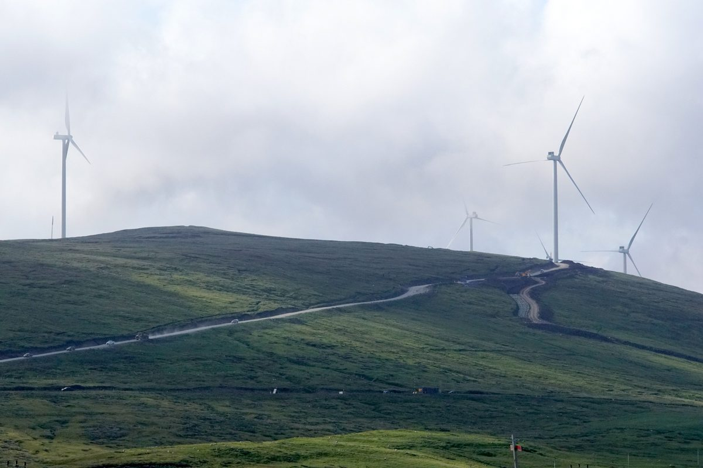

셰틀랜드 바이킹 풍력 공동체기금, 지난 회계연도 76개 사업에 214만 파운드 지원

80만 파운드 이상은 주택 에너지효율 개선 등 생활비 경감에…2024년 9월 출범 뒤 누적 380만 파운드 넘어
영국 스코틀랜드 셰틀랜드의 바이킹 에너지(Viking Energy) 풍력단지 공동체 이익 제도로 운영되는 바이킹 공동체기금(VCF)이 2025/26 회계연도에 섬 곳곳 76개 사업에 214만 파운드 넘게 지원했다. 이 가운데 80만 파운드 이상은 셰틀랜드 의회(SIC)·웜웍스(Warmworks)와 손잡고 가정의 에너지효율을 높여 생활비 부담을 덜어 주는 데 쓰였다. 학생과 도제 83명에게 장학금 7만6,699파운드가 돌아갔고, 지역 기업 10곳은 16~25세 도제를 고용하는 데 지원을 받았다. 기금은 셰틀랜드 공동체이익기금(SCBF)이 맡아 공모사업과 전략기금 두 갈래로 운영하며, 공모사업으로는 체육시설·마을회관·청소년 활동 등 63개 지역 사업을 도왔다. 2024년 9월 출범한 이 기금의 누적 지원액은 380만 파운드를 넘었고, 엘리너 기어(Eleanor Gear) SCBF 기금 매니저는 기금의 목표가 셰틀랜드 공동체를 지키고 발전시키는 데 있다고 설명했다.
시민에너지 관점
한 해 214만 파운드 가운데 80만 파운드 이상이 주택 에너지효율 개선에 들어갔다는 것은, 풍력단지의 이익이 섬 주민의 에너지 요금이라는 가장 절실한 문제로 곧장 이어졌다는 뜻이다. 대형 발전소가 내는 지역기금은 생색내기에 그친다는 비판도 있지만, 장학금과 도제 고용, 마을회관까지 76개 사업으로 나뉘어 주민이 체감하는 쓰임새가 분명하다. 다만 기금은 남이 번 이익의 일부를 나눠 받는 데 그치므로, 주민이 지분을 갖고 수익과 결정권을 함께 쥘 때 지역은 수혜자를 넘어 주인이 된다. 국내 재생에너지 사업도 이익공유를 일회성 지원금이 아니라 에너지효율·일자리에 꾸준히 쓰는 지역기금과 주민 지분 참여로 함께 설계해야 한다.
출처: The Shetland Times 2026-10-20 Scott Moncrieff 원문 보기
シェトランドのバイキング風力コミュニティー基金、前会計年度に76事業へ214万ポンドを支援
80万ポンド以上は住宅のエネルギー効率改善など生活費の軽減に…2024年9月の発足以来の累計は380万ポンド超
英スコットランド・シェトランドのバイキング・エナジー（Viking Energy）風力発電所の地域還元制度で運営されるバイキング・コミュニティー基金（VCF）が、2025/26会計年度に島内各地の76事業へ214万ポンド以上を支援した。このうち80万ポンド以上は、シェトランド議会（SIC）やウォームワークス（Warmworks）と連携し、家庭のエネルギー効率を高めて生活費の負担を軽くするために使われた。学生や見習い83人には奨学金計7万6,699ポンドが支給され、地元企業10社は16～25歳の見習いを雇用するための支援を受けた。基金はシェトランド・コミュニティー・ベネフィット基金（SCBF）が管理し、公募事業と戦略基金の二本立てで運営されており、公募事業ではスポーツ施設や集会所、青少年活動など63の地域事業を支えた。2024年9月に発足したこの基金の累計支援額は380万ポンドを超え、SCBFのエレノア・ギア（Eleanor Gear）基金マネジャーは、基金の目的はシェトランドの地域社会を維持し発展させることにあると説明した。
市民エネルギーの視点
年間214万ポンドのうち80万ポンド以上が住宅のエネルギー効率改善に充てられたことは、風力発電所の利益が島民のエネルギー料金という最も切実な問題に直結したことを意味する。大規模発電所が出す地域基金は体裁づくりにすぎないという批判もあるが、奨学金や見習い雇用、集会所まで76の事業に分かれ、住民が実感できる使い道ははっきりしている。ただし基金は他者が得た利益の一部を分けてもらうにとどまるため、住民が持ち分を持ち、収益と決定権をともに握ってこそ、地域は受益者を超えて所有者になる。韓国の再生可能エネルギー事業も、利益共有を一度きりの支援金ではなく、エネルギー効率や雇用に継続して使う地域基金と住民の出資参加を組み合わせて設計すべきだ。
出典: The Shetland Times 2026-10-20 Scott Moncrieff 原文を読む
设得兰Viking风电社区基金上一财年资助76个项目共214万英镑
80万英镑以上用于住宅能效改造等减轻生活成本，2024年9月设立以来累计超过380万英镑
依托英国苏格兰设得兰Viking Energy风电场社区利益机制运营的Viking社区基金（VCF），在2025/26财年向全岛76个项目提供了超过214万英镑的资助。其中80万英镑以上与设得兰群岛议会（SIC）和Warmworks合作，用于提高家庭能效、减轻生活成本负担。83名学生和学徒获得共计76,699英镑的奖学金，10家本地企业获得了雇用16至25岁学徒的支持。基金由设得兰社区利益基金（SCBF）管理，分为社区资助计划和战略基金两部分，其中社区资助计划支持了体育设施、社区会堂、青少年活动等63个地方项目。该基金于2024年9月设立，累计资助额已超过380万英镑，SCBF基金经理Eleanor Gear表示，基金的目标是维系并发展设得兰的各个社区。
市民能源视角
一年214万英镑中有80万英镑以上投入住宅能效改造，说明风电场的收益直接用在了岛民能源账单这一最迫切的问题上。有人批评大型电站出资的地方基金不过是装点门面，但从奖学金、学徒雇用到社区会堂，76个项目让居民切实感受到了资金的用途。不过，基金终究只是分得别人所赚利润的一部分，只有居民持有股份、同时掌握收益和决策权，地方才能从受益者变成主人。韩国的可再生能源项目也应把利益共享设计为持续投入能效和就业的地方基金，并与居民入股参与结合起来，而不是一次性补贴。
来源: The Shetland Times 2026-10-20 Scott Moncrieff 查看原文
Shetland's Viking wind community fund awards 2.14 million pounds to 76 projects in a year
More than 800,000 pounds went to cutting living costs through home energy efficiency; total awards since September 2024 top 3.8 million pounds
The Viking Community Fund (VCF), funded through the community benefit scheme of the Viking Energy wind farm in Shetland, Scotland, awarded more than 2,140,000 pounds to 76 projects across the isles in the 2025/26 financial year. More than 800,000 pounds of that went to easing the cost of living by improving home energy efficiency in partnership with Shetland Islands Council (SIC) and Warmworks. Eighty-three bursaries worth 76,699 pounds went to students and apprentices, and 10 local businesses received support to employ apprentices aged 16 to 25. The fund is administered by the Shetland Community Benefit Fund (SCBF) in two strands, a community grant scheme and a strategic fund, and the grant scheme backed 63 local projects including sports facilities, public halls and youth activities. Since its launch in September 2024 the fund has awarded more than 3,800,000 pounds, and SCBF fund manager Eleanor Gear said its aim is to help sustain and develop Shetland's communities.
Citizen Energy View
That more than 800,000 of the year's 2.14 million pounds went into home energy efficiency means wind farm profits were channeled straight into islanders' most pressing problem, their energy bills. Critics may call community funds from big power plants mere tokens, but spread over 76 projects from bursaries and apprenticeships to village halls, the benefits are tangible for residents. Still, such a fund only shares out part of someone else's profit; communities move from beneficiaries to owners when residents hold equity and share both the returns and the decisions. Korean renewable projects should design benefit sharing not as one-off handouts but as local funds steadily invested in efficiency and jobs, combined with resident equity stakes.
Source: The Shetland Times 2026-10-20 Scott Moncrieff Read the original